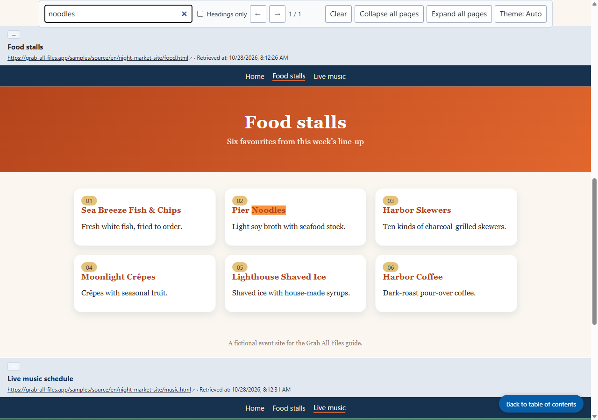

Real output from Grab All Files
Three pages combined in their original look, with contents and search (Pro)
A fictional event site with its own colours and type (home, food stalls and live music: three pages), combined into one HTML file with “Keep the original look” and “HTML with contents and search”. Each page sits in a frame in its original design, with the address it came from and the capture time above it. The contents at the top jump to each page, and the search box searches all three.
Output files
The saved HTML, opened and searched for “noodles” (screenshot taken by the site)

How it was made
- Source page
- /samples/source/en/night-market-site/
- Extension
- Grab All Files 5.8.31
- Browser
- Chrome 156.0.8078.48 (Windows 11)
- Plan
- Pro
- Made on
- 2026-10-28
- Settings
- Pages: linked pages (3 pages)
- Look: as the original page
- Output: HTML with contents and search
- Images: stored in the file (shows offline)